Track Record & Trading Statistics (Part 2 — Advanced)
The advanced ratios — Sharpe, Sortino, Calmar and the Kelly criterion — read GROSS because ITPM targets absolute, not excess, returns.
Part 2 layers four advanced statistics on top of the basics: the Sharpe, Sortino and Calmar risk-adjusted ratios, plus the Kelly criterion for position sizing. Every ratio is used GROSS (risk-free rate dropped), and Kelly is treated as a MAXIMUM position-size limit — never a recommendation.
The gist
- All advanced ratios are used GROSS — the risk-free rate is dropped from the numerator because ITPM targets ABSOLUTE returns, not excess returns.
- Gross Sharpe = annualized mean return / annualized standard deviation; penalizes TOTAL volatility and assumes normally distributed returns. Bands: 0–0.5 poor · 0.5–1 suboptimal · 1–1.5 ok/fairly good · 1.5–2 very good · >2 excellent. Example: 1.62.
- Gross Sortino = annualized mean return / annualized DOWNSIDE deviation; only penalizes downside so it doesn't punish positive skew, is always ≥ Sharpe, and the two are NOT directly comparable. Bands: 0–1 suboptimal · 1–2 reasonable · 2–3 good · >3 very good. Example: 2.68.
- Calmar = annualized return / maximum drawdown, computed over the WHOLE history so the denominator can only worsen over time. Bands: 0–0.5 pretty bad · 0.5–1 OK · 1–2 fairly good · >2 very good. Example: 2.18.
- Maximum Drawdown = largest peak-to-trough % decline on the portfolio index (rolling drawdown vs running max, absolute of the minimum). Example: 13.02%, which occurred in H2-2020 post-COVID.
- Kelly (John Kelly, 1950s) sizes bets to maximize expected GEOMETRIC wealth growth. General K = p/a − q/b (p win prob, q loss prob, b win gain %, a loss %). Betting K = p − q/X (X = avg win / avg loss = R; assumes 100% of stake lost, so always lower).
- This portfolio: full Kelly 224.61% / betting Kelly 29.40%. Two-trade toy (Win 30% / Loss −10% / R = 3 / 50-50) → full 333.3% / betting 33.3%. The 5%-edge simulation (52.5%/47.5% double-or-nothing) shows a 5% bet beats 2%, 1%, 10%, 15% and 20%.
- Returns are NON-LINEAR: a 100% gain needs only a 50% loss to offset, but a 1000% gain needs a 90.91% loss — which is why over-sizing destroys the bankroll even with a guaranteed edge.
- Full Kelly is dangerous (no regard for risk, ignores correlation, inputs are estimates) — it is a MAXIMUM position-size LIMIT, not a recommendation; use FRACTIONAL and/or betting Kelly.
- Trade time-horizon distribution (5-day bins, <5 to >90; average 51.49 / median 50.00 days) confirms the 20–60 day window; sub-10-day clusters were valid COVID-vol trades, while two long OSTK trades over 90 days flag favorite-stock bias.
Part 2: the advanced statistics, and why they're all gross
- Second and final video in the track-record series — advanced stats on top of Part 1's basics.
- Four metrics covered: Kelly criterion, Sharpe ratio, Sortino ratio and Calmar ratio.
- Because ITPM targets ABSOLUTE returns (not excess returns), every ratio is used in its GROSS form — the risk-free rate is dropped from the numerator.
Part 2 builds directly on the previous video's spreadsheet. The unifying theme is absolute return: since the desk is judged on total money made rather than return above cash, the risk-free rate is stripped out of each ratio to give its 'gross' variant.
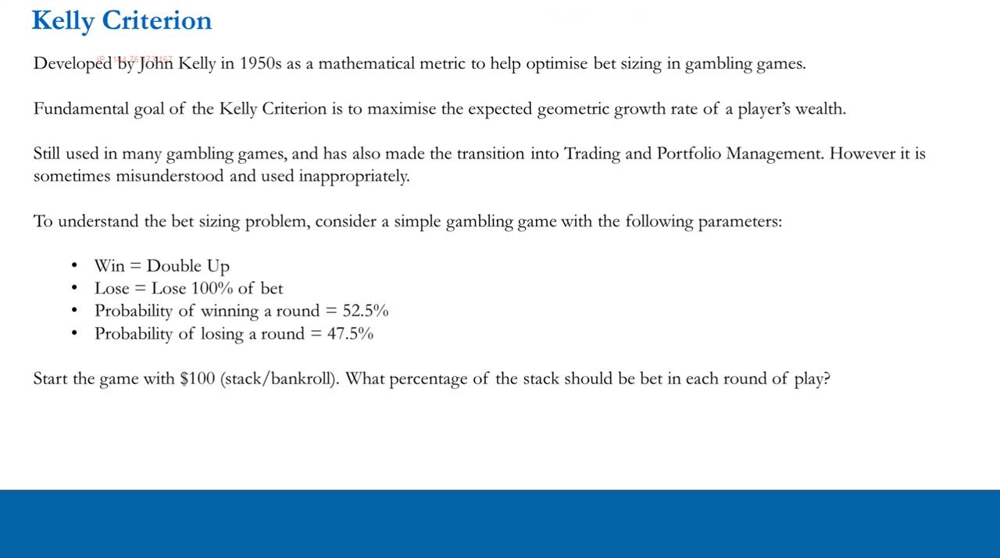
Kelly criterion: the bet-sizing problem
- Developed by John Kelly in the 1950s to size bets in gambling games; goal is to maximize the expected GEOMETRIC growth rate of wealth.
- Toy game: Win = double up, Lose = lose 100% of the bet, win prob 52.5% / loss prob 47.5%, starting with $100.
- Question: what % of the stack (bankroll) should be bet in each round?
Kelly has crossed from gambling into trading but is widely misunderstood. The core question — what fraction of capital to stake — is set up with a simple double-or-nothing game that has a known 5% edge.
The 5%-edge simulation: bigger is NOT better
- 1,000-round simulation of six bet sizes: 1%, 2%, 5%, 10%, 15% and 20% of the stack.
- Despite a 5% edge (52.5% − 47.5%), the 10%, 15% and 20% bet sizes perform WORST.
- The end point after 1,000 bets is the same regardless of the ORDER of wins and losses, as long as 52.5% are winners.
Intuition says a bigger edge means bet bigger — the simulation disproves it. Over-sizing erodes the bankroll even when the edge is guaranteed, and reshuffling the order of outcomes doesn't change the endpoint.
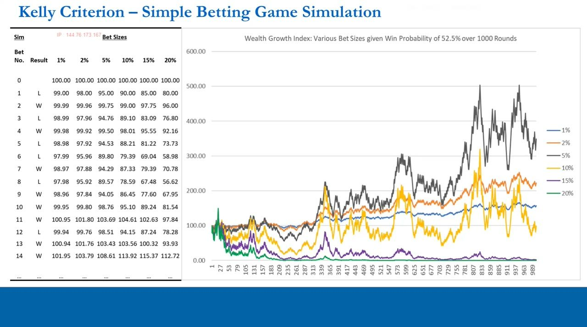
There is an optimal bet size
- Ranking of the six models: 5% best, then 2%, then 1%, then 10%, 15% and 20%.
- Over-sized bets (20%, 15%, 10%) crash toward zero over 1,000 rounds while the smaller bets stay elevated.
- So neither 'biggest' nor 'smallest' wins — there is an OPTIMAL size, and Kelly's job is to find it.
The wealth-growth chart makes the point visually: the 5% line is the best performer. With known win/loss probabilities and known amounts gained and lost, an optimal fraction exists — that fraction is the Kelly criterion.
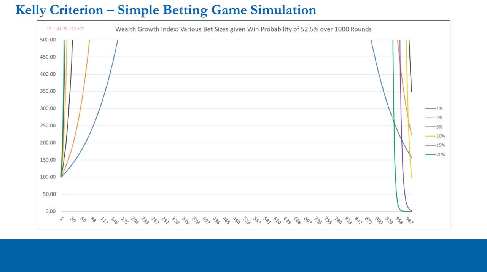
Two-trade example: profit peaks then reverses
- Simplified to two trades: one wins 30%, one loses 10% → R-score of 3 at face value, with 50% win / 50% loss.
- At bet size 0.20 → win leg +6%, loss leg −2%, compounded from $100 → $103.88 (3.88% profit).
- As bet size rises the two-trade profit PEAKS (~133 near bet size 3.0–3.5) and then, with enough leverage, turns into a LOSS.
This is the Kelly curve in table form. As leverage grows, the per-trade win and loss scale linearly, but the effect on final wealth doesn't — so profit rises to a peak and then falls back, eventually going negative.
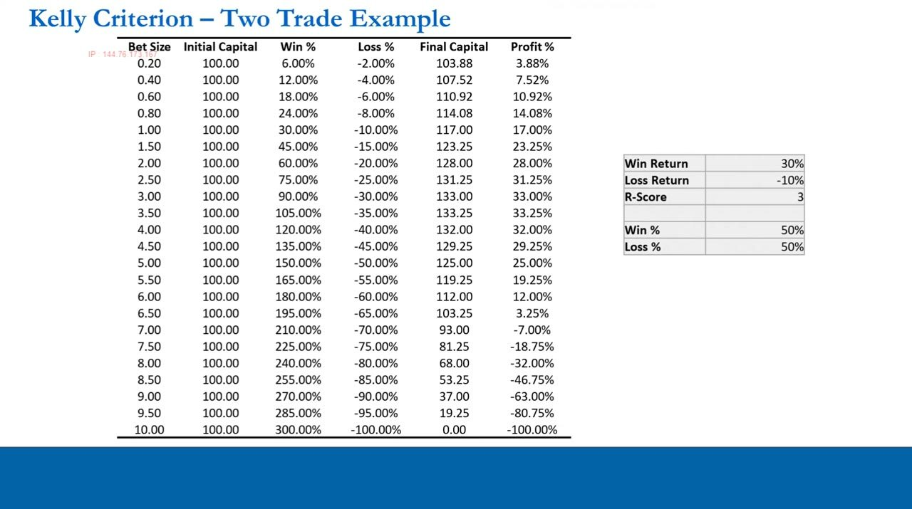
Why returns are non-linear
- The impact of a % gain vs an equal-and-opposite % loss on final wealth is NOT linear.
- A 1% gain is offset by a 0.99% loss; a 10% gain by 9.09%; a 100% gain by only a 50% loss; a 1000% gain needs a 90.91% loss.
- This asymmetry is exactly what makes the two-trade profit collapse as leverage is stacked on.
The bigger the gain, the disproportionately larger the loss needed to cancel it — which is why compounding large swings hollows out the bankroll. This non-linearity is the mathematical heart of the Kelly curve.
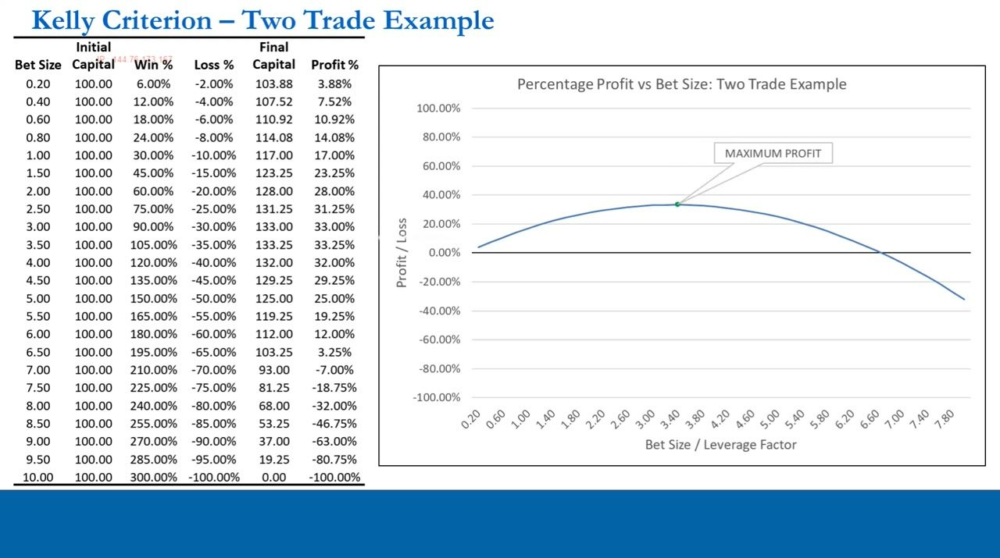
The Kelly formulas: general and betting
- General formula: K = p/a − q/b, where K = position size (% of total capital), p = win prob, q = loss prob (1−p), b = gain % under a win, a = loss % under a loss.
- Betting formula: K = p − q/X, where X = ratio between the win gain % and the loss %.
- The betting formula assumes the FULL stake is lost on a losing bet (a = 100%) — appropriate for gambling, less so for trading — so it always gives a LOWER number.
K is found by setting the slope of the Kelly curve to zero (its apex). The general formula suits trading (partial losses); the betting formula is the gambling special case that assumes a total loss on every losing bet, hence its lower, more conservative output.
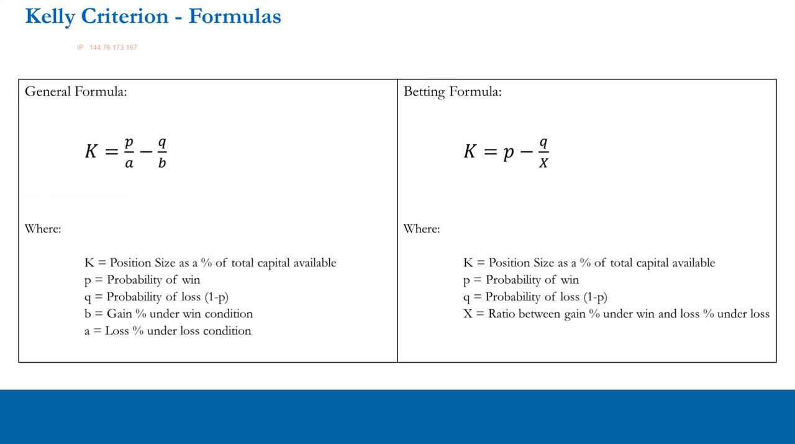
Kelly applied — and why it's dangerous
- Two-trade example (Win 30% / Loss −10% / R = 3 / 50-50): full Kelly 333.3% vs betting Kelly 33.3%.
- Kelly maximizes profit with NO regard for risk, ignores correlation and portfolio weighting effects, and assumes its inputs are KNOWN.
- In reality inputs are estimates with huge variability — using empirical Kelly to size trades sends an unacceptable number of simulations bust.
Kelly's aim is to maximize profit, not risk-adjusted return, and at the curve's apex you gain no extra profit for the extra risk. Because both its risk-blindness and its uncertain inputs are serious flaws, Kelly must be handled with great care.
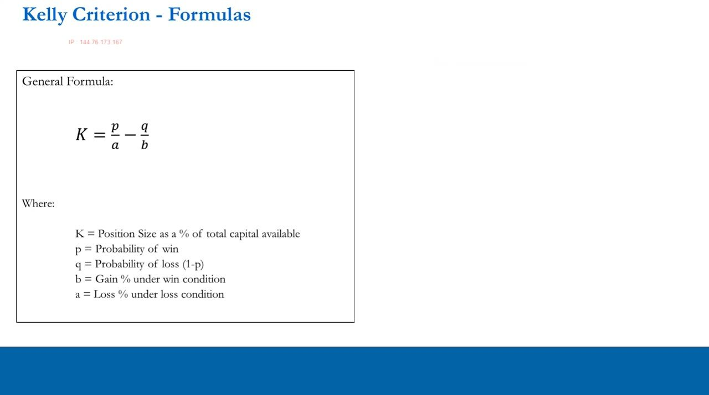
The stance: a ceiling, not a recommendation
- Approach 1: use Kelly merely as a PERFORMANCE metric — a higher Kelly indicates better performance, across portfolios or through time.
- Approach 2: if using it for sizing, take a FRACTION of it and/or use the (lower) betting Kelly, then layer your own judgement over the top.
- Even ignoring both flaws, Kelly's output is only ever an ABSOLUTE MAXIMUM position-size limit — never an average or a recommendation.
The practical rule: fractional Kelly and/or betting Kelly, treated as a hard ceiling. It's a guide that requires human interpretation, which is precisely why the desk also watches so many other performance metrics.
Sharpe ratio (gross)
- Full formula: Sharpe = (Rp − Rf) / Sp, where Rp = annualized mean return, Rf = annualized risk-free rate, Sp = annualized standard deviation.
- Gross Sharpe = annualized mean return / annualized standard deviation (risk-free rate removed for absolute-return purposes).
- Penalizes TOTAL volatility and assumes normally distributed returns. Bands: 0–0.5 poor · 0.5–1 suboptimal · 1–1.5 ok/fairly good · 1.5–2 very good · >2 excellent. Example: 1.62.
The Sharpe ratio measures risk-adjusted return with risk defined as total standard deviation. It's simple, but it assumes normal returns and punishes upside volatility just as harshly as downside — a weakness the Sortino ratio addresses.
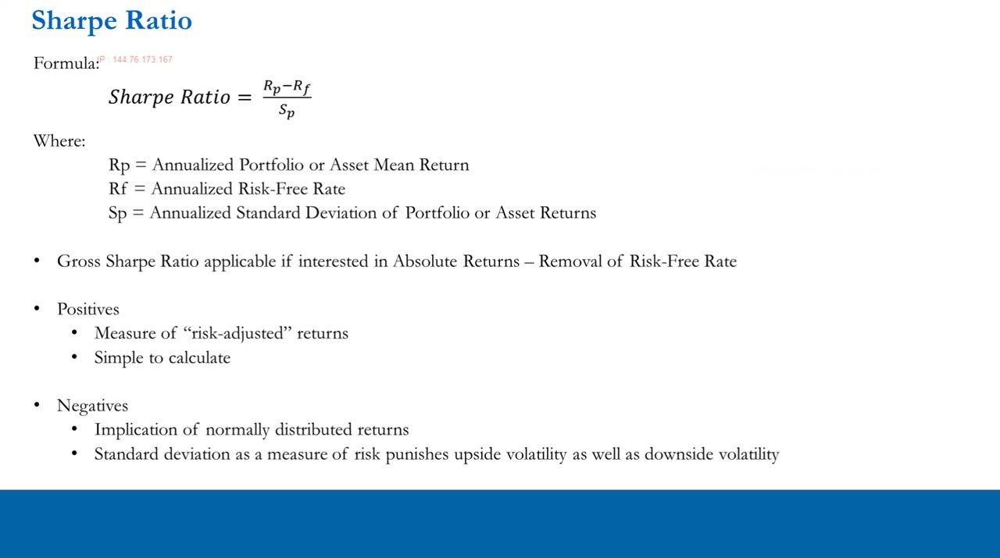
Sortino ratio (gross)
- Gross Sortino = annualized mean return / annualized DOWNSIDE deviation (downside deviation = std dev of negative returns after setting positive returns to zero).
- Only penalizes downside, so it does NOT punish positive skew; it will punish negative skew — exactly what we want.
- Structurally ALWAYS ≥ the Sharpe ratio and NOT directly comparable to it — look at both. Bands: 0–1 suboptimal · 1–2 reasonable · 2–3 good · >3 very good. Example: 2.68.
Sortino swaps total volatility for downside-only volatility, which better reflects that traders fear losses, not gains. Because it shrinks the denominator, it is always higher than Sharpe — so the two are read together, not against each other.
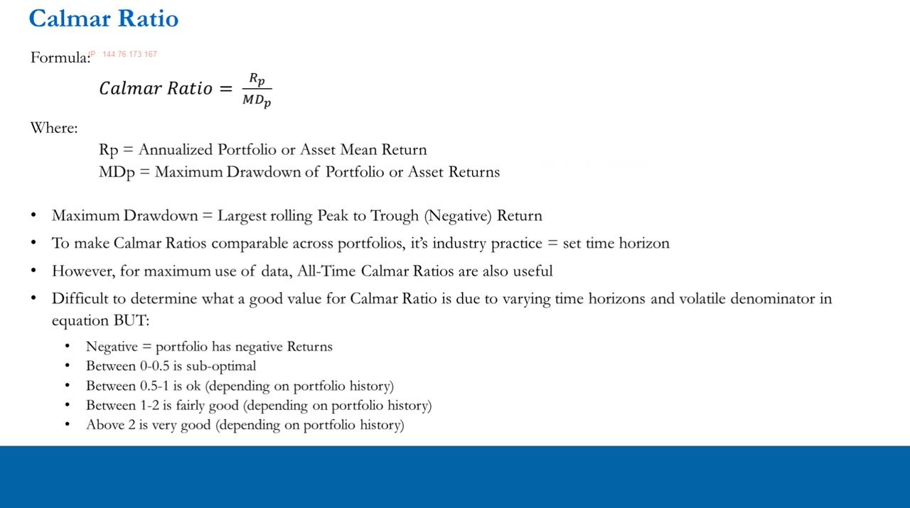
Calmar ratio & maximum drawdown
- Calmar = annualized portfolio return / maximum drawdown; the drawdown denominator replaces standard deviation.
- Industry practice sets a fixed time window for comparability, but ITPM tends to use ALL-TIME Calmar — which is structurally biased DOWN because the max-drawdown denominator can only get worse over time.
- Bands: 0–0.5 pretty bad · 0.5–1 OK · 1–2 fairly good · >2 very good. Example: 2.18.
Calmar frames return against the worst peak-to-trough loss rather than volatility. Using the entire history maximizes data use (helpful for short track records) but means a longer history mechanically drags the ratio down as the all-time worst drawdown can only deepen.
Maximum drawdown: the calculation
- Max drawdown = the largest peak-to-trough % decline on the portfolio index — the biggest negative return from any historic peak.
- Computed as a rolling drawdown of the current index level vs its running maximum, taking the minimum (positives floored at zero), then the absolute value of that minimum.
- This portfolio's max drawdown is 13.02%, which happened in H2-2020 as volatility fell post-COVID.
The rolling drawdown column measures how far below its running high the index sits at each point; the worst of these is the maximum drawdown. Reported as a positive number by convention, it feeds straight into the Calmar denominator.
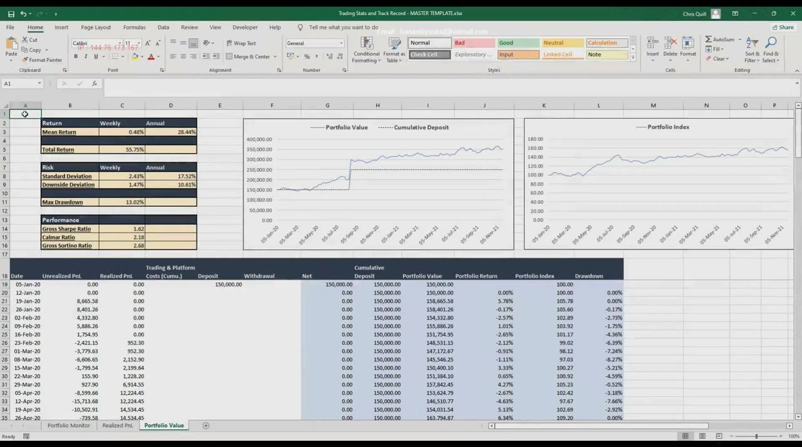
Portfolio Value stats refresh
- Return: Mean 0.48% weekly / 28.44% annual; Total 55.75%.
- Risk: Standard Deviation 2.43% weekly / 17.52% annual; Downside Deviation 1.47% weekly / 10.61% annual; Max Drawdown 13.02%.
- Performance: Gross Sharpe 1.62 · Calmar 2.18 · Gross Sortino 2.68 — strong for a retail trader, with the caveat of only ~1.5 years of history.
The Portfolio Value tab pulls the whole picture together. The ratios are genuinely good, especially Sharpe and Sortino; Calmar is harder to judge given the short, relatively calm history it was measured over.
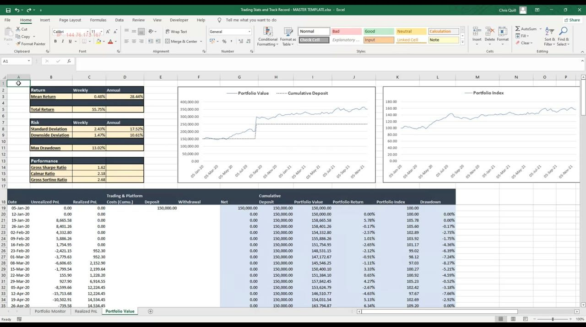
Trade time-horizon distribution
- Days-in-trade binned into 5-day intervals from <5 to >90; average 51.49 / median 50.00 calendar days.
- The bulk sits inside the 20–60 day (one-to-three-month) sweet spot, confirming the target window; sub-10-day clusters all fell in the March–April 2020 COVID vol spike and are perfectly valid.
- >90-day trades were just two long OSTK positions (8-Sep-2020 to 3-Nov-2021) — long both times and not very profitable — flagging possible favorite-stock bias.
The horizon histogram is a behavioural check: it confirms the trader is holding within the intended window, explains the short-horizon outliers as legitimate high-vol trades, and surfaces the long-tail outliers as a bias worth interrogating. This completes the two-part track-record series.
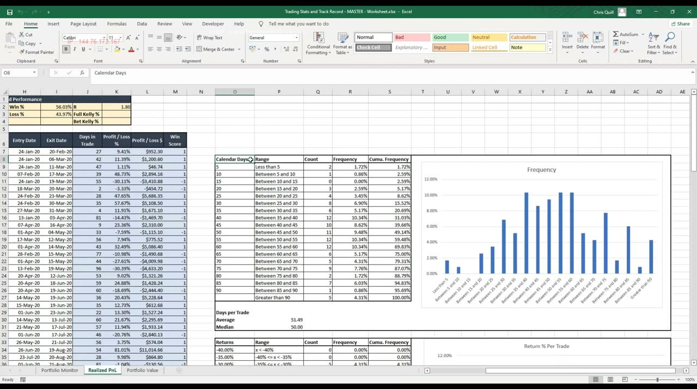
Glossary
- Gross ratioAny risk-adjusted ratio (Sharpe/Sortino/Calmar) computed WITHOUT subtracting the risk-free rate, appropriate when targeting absolute rather than excess returns.
- Sharpe ratio(Rp − Rf) / Sp — annualized excess return per unit of TOTAL annualized volatility; gross form = annualized mean / annualized std dev. Assumes normal returns.
- Sortino ratioAnnualized mean return / annualized DOWNSIDE deviation — penalizes only downside volatility, so it doesn't punish positive skew. Always ≥ Sharpe.
- Downside deviationThe standard deviation computed only from negative historical returns after all positive returns are set to zero.
- Calmar ratioAnnualized return / maximum drawdown. ITPM computes it all-time, so the denominator can only worsen over time (a downward structural bias).
- Maximum drawdownThe largest peak-to-trough % decline on the portfolio index — the absolute value of the minimum rolling drawdown vs the running maximum. Example: 13.02%.
- Kelly criterionThe bet fraction that maximizes expected geometric wealth growth (John Kelly, 1950s). General K = p/a − q/b.
- Betting KellyThe gambling-case Kelly, K = p − q/X (X = avg win / avg loss = R). Assumes a 100% loss on losing bets, so it is always lower than full Kelly.
- Fractional KellyUsing only a fraction of the Kelly output to size positions, scaling back for risk and input uncertainty; Kelly is a maximum limit, not a recommendation.
- R (R-score)The ratio of average win return to average loss return (avg win / avg loss); equal to X in the betting Kelly formula. Example: 1.80.
- Trade time-horizon distributionHistogram of days-in-trade in 5-day bins used to confirm holds sit in the 20–60 day window and to flag short-vol and favorite-stock outliers.